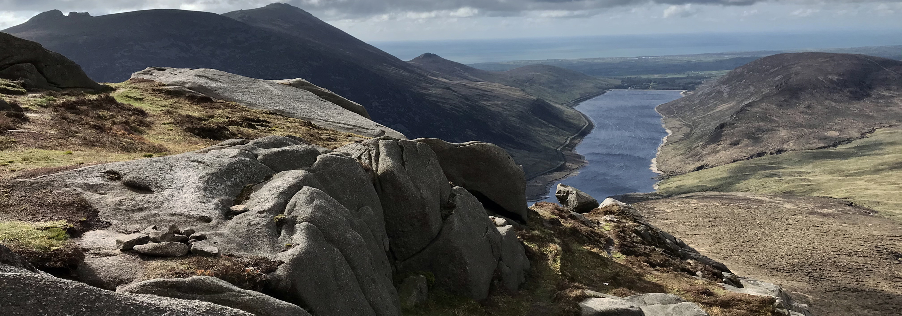

Welcome to Mourne Mountains
Start at Bloody Bridge car park
Walk up to Crannoge Quarry

Climb over Mourne Wall at Bog of Slieve Donard
Let's support Mourne Mountain Rescue Team!
Walk under the Castles

Discover Mourne Mountain beauty and support local rescue team!
The walk follows smugglers path over the mountain called Brandy Pad. It was used as a route evading coast guards and revenue
men in the nineteenth century. Smuggled goods were often transported on pack ponies via this high mountain route.
The walk starts at Bloody Bridge car park and follows Bloody Bridge River up the hill. Path crossing Crannoge Quarry and leading to Bog of Slieve
Donard where you first cross 32 km long Mourne Wall over the cranes. The highest mountain in Northern Ireland Slieve Donard will be on the right
side and the wall is leading to the top of it. At this point the steepest part of the walk is done.
Following section of the walk leading just
under The Castles on the right side, a line of cliffs and rocky tors situated on lower Slieve Commedagh. Ben Crom reservoir is on the left side.
Finally you will cross the Mourne wall second time in Hares Gap with
Slieve Bernagh on the left site and walk down the valley along the river. Meelmore Lodge will be
in front of you and you have to cross the wall one more time. The walk should not take longer than 4 hours.
The Mourne Mountain Rescue Team is made up entirely of volunteers who live close to the Mournes and are based at the foot of Slieve Donard in the coastal town of Newcastle.
The Team maintains an operational membership of around thirty-five people in order to provide this service. They are a registered charity and totally dependent on donations from the public. It costs around £35,000 per year to maintain the service which must be raised through Mourne Mountain Rescue Team efforts. Any help is vital for them to maintain the rescue service. Please visit donation page for more information. MMRT
Please find the direction to Bloody Bridge car park on Google Map